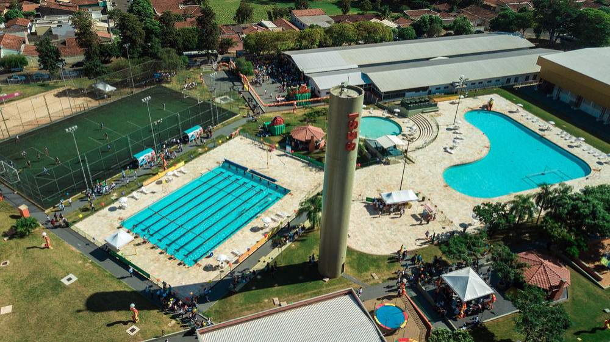

Gestão documental
Organização, localização e acompanhamento de documentos e informações.
MINHA TRAJETÓRIA
Minha trajetória começou em Araçatuba, no interior de São Paulo. Entre escolas, cursos, meu primeiro emprego, uma mudança de estado, faculdade e empreendedorismo, cada etapa contribuiu para a pessoa e profissional que sou hoje.
EXPLORE POR TEMA
ÁLBUM DE MEMÓRIAS
Da escola aos primeiros cursos: veja as fotografias originais da versão 2 da minha landing page.

Curso Sistemas de Informação na Universidade Vila Velha (UVV), com disciplinas de Construção de Software para Web, Banco de Dados I, Experiência e Interface com o Usuário, Fundamentos de Tecnologia da Computação, Lógica para Computação e Textos Científicos.
Além da tecnologia e dos projetos profissionais, a música também faz parte da minha história. Abaixo, um vídeo musical como exemplo de incorporação de mídia externa em HTML.
Uma das músicas que mais gosto é Patience, do Guns N’ Roses. Uma canção que me acompanha e me lembra da importância de ter paciência e valorizar cada etapa da jornada.
Guns N’ Roses — Patience
Veja exemplos de serviços e valores ilustrativos e conheça o formulário de orçamento.
Ver serviços e preçosNAVEGAÇÃO SIMPLES
Conheça minha formação, os projetos acadêmicos e os tipos de sites que estou aprendendo a desenvolver.
Tecnologia que nasce da experiência e evolui para resolver desafios reais.
Ao longo da minha trajetória, acompanhei de perto desafios que fazem parte da rotina de muitas empresas: documentos dispersos, controles manuais, informações difíceis de localizar e equipes que dedicam tempo demais a tarefas repetitivas. Essa vivência despertou em mim o desejo de transformar problemas reais em soluções tecnológicas.
É desse propósito que nasce o projeto da GDITech, empresa que pretendo lançar em um futuro próximo, dedicada à criação de softwares para apoiar a gestão documental, a contabilidade, a gestão de pessoas e as operações de outsourcing.
A proposta é desenvolver ferramentas que conversem com a realidade de quem executa os processos: organizar informações, integrar rotinas, automatizar atividades e facilitar o acompanhamento das operações. Soluções pensadas para ajudar empresas a ganhar eficiência, reduzir retrabalho e tomar decisões com informações mais acessíveis e confiáveis.
Organização, localização e acompanhamento de documentos e informações.
Apoio aos controles, à organização documental e às rotinas contábeis.
Ferramentas para facilitar registros, documentos e processos de equipes.
Acompanhamento de serviços, atividades e operações terceirizadas.
Minha experiência em gestão e operações, somada à formação em Sistemas de Informação, está construindo a base desse próximo capítulo. Quero aproximar o conhecimento do negócio e o desenvolvimento de software para criar tecnologias úteis, com aplicação prática no dia a dia das empresas.
Uma nova etapa em construção.
Você também
identifica desafios que poderiam ser resolvidos com tecnologia?
CONTATOS E CONEXÕES
Acompanhe minha trajetória e entre em contato para assuntos pessoais ou profissionais.